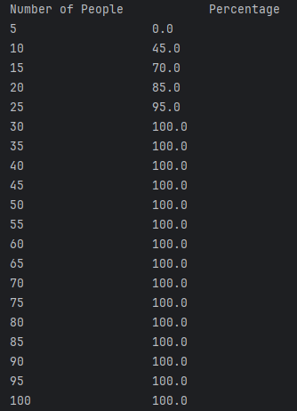

I am a Computer Science and Finance student at the University of San Diego from St Paul Minnesota.
I have a concentration in Data Science and AI for my Computer Science major. I hope to use this with my Finance major to work with Data and Machine learning to solve problems in the financial industry.
I love spending time outdoors, especially hiking and swimming in the ocean in the summer. In the winter I love spending time on the slopes skiing and enjoying a book by the fire with my dogs.
Projects

Birthday Paradox Simulation
The purpose of this project is to simulate the birthday paradox and show the odds that two people in a room of a certain size will share a birthday. Specifically that the odds of two people sharing a birthday in a room of 23 people is about 50%.
For each trial we would randomly generate a birthday for each person and check to see if any two people shared a birthday. For each room size we would run a relativly small sample size of 20 trials. This would give us a rough estimate of the odds of two people sharing a birthday in a room of that size.
On this project I worked with a team of one other student. My portion was to create the Birthday and Simulator classes. The Birthday class used a random number generator in conjunction with the monthday class to generate a random birthday. This class would be called by the trial class which my partner created to to create a list of Birthdays and check if any two people shared a birthday. Trials would be called by the experiment class which would call trial to see if two people shared a birthday for a certain room size and repeat this process 20 per room size. Simulator would call experiment for each room size and print the results so that they are in an easily readable format.

Data Science Loan Approval
This project builds a full machine learning pipeline to predict loan approval using a credit risk dataset from Kaggle. Me and a partner cleaned and pre-processed the data with label encoding, one-hot encoding, outlier removal, feature scaling, and feature engineering.
We trained and compared Decision Tree, Random Forest, Gradient Boosting, and Logistic Regression models using accuracy and F1-score, then validated performance with stratified cross-validation. Random Forest and Gradient Boosting performed best overall, while Logistic Regression was emphasized for interpretability in lending decisions.

Blackjack Machine Learning
This project is a blackjack simulation and reinforcement learning system that trains models to improve play and betting decisions over time. It currently contains both a tabular Q-learning and a Deep Q-Network model. They are both initialized with basic strategy so that learning is focused on maximizing value based on the current deck state and count signals rather than learning basic strategy from scratch. It includes a variety of training techniques such as epsilon-greedy action selection with decay for exploration, learning rate, and temperature. For specifically the deepQ model there is replay-based training, as well as multi-phase training for play actions and bet sizing, meaning the model learns to play first then how to bet.
The system includes an evaluation against multiple basic-strategy players, this allows us to compare the preformance of our trained model to a standard baseline. The system also includes a interactive mode where the trained model can be trained then used to play hands with an actual deck of cards. It does this by asking the user to input dealers up card, as well as every other card that is visable so the model can keep an accurate count and make informed decisions based on the current state of the deck. This will be a continuous project as I keep adding new models and tweak the configurations to try and improve performance.